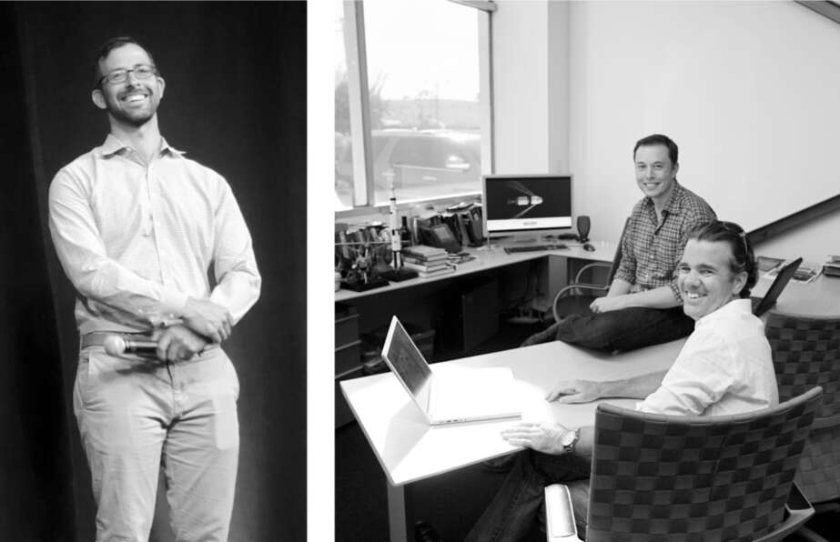

Henrik Fisker
Vòng gọi vốn vào Giáng sinh năm 2008, khoản đầu tư của Daimler và khoản vay của chính phủ đã cho phép Musk tiếp tục với một dự án mà nếu thành công, sẽ biến Tesla thành một công ty ô tô thực sự, dẫn đầu kỷ nguyên xe điện: một chiếc sedan bốn cửa phổ thông, có giá khoảng 60.000 đô la, sẽ được sản xuất hàng loạt. Nó được gọi là Model S.
Musk đã dành rất nhiều thời gian cho thiết kế Roadster, nhưng ông gặp khó khăn hơn nhiều khi cố gắng định hình một chiếc sedan bốn cửa. "Ở một chiếc xe thể thao, các đường nét và tỷ lệ giống như của một siêu mẫu, và việc làm cho nó trông đẹp mắt tương đối dễ dàng", ông nói. "Nhưng tỷ lệ của một chiếc sedan thì khó làm hài lòng hơn."
Tesla ban đầu đã ký hợp đồng với Henrik Fisker, một nhà thiết kế gốc Đan Mạch ở Nam California, người đã tạo ra kiểu dáng gợi cảm của BMW Z8 và Aston Martin DB9. Musk không ấn tượng với ý tưởng của ông ta. "Trông nó giống như một quả trứng chết tiệt trên bánh xe", ông nói về một trong những bản phác thảo của Fisker. "Hãy hạ thấp mui xe xuống."
Fisker đã cố gắng giải thích vấn đề cho Musk. Vì bộ pin sẽ nâng sàn xe lên, nên phần mái phải được làm nhô lên để đảm bảo đủ khoảng không phía trên đầu. Fisker đã vẽ phác thảo thiết kế Aston Martin mà Musk yêu thích lên bảng trắng. Đó là một chiếc xe thấp và rộng. Nhưng Model S không thể có tỷ lệ thanh thoát tương tự do vị trí đặt pin. "Hãy tưởng tượng ông đang ở một buổi trình diễn thời trang của Giorgio Armani," Fisker giải thích. "Một người mẫu cao mét tám, nặng bốn mươi lăm ký bước ra trong bộ váy. Ông đang đi cùng vợ, người chỉ cao mét rưỡi và nặng sáu mươi tám ký, và ông nói với Armani, 'Hãy may chiếc váy đó cho vợ tôi.' Nó sẽ không giống nhau đâu."
Musk đã yêu cầu hàng tá thay đổi, bao gồm cả hình dạng đèn pha và đường nét nắp capo. Fisker, người tự coi mình là một nghệ sĩ, đã nói với Musk lý do tại sao anh không muốn thực hiện một số thay đổi đó. "Tôi không quan tâm anh muốn gì," Musk đáp lại. "Tôi đang yêu cầu anh làm những việc này." Fisker nhớ lại cường độ hỗn loạn của Musk với giọng điệu vừa mệt mỏi vừa thích thú. "Tôi không phải kiểu người như Musk," anh nói. "Tôi khá thoải mái." Sau chín tháng, Musk đã hủy hợp đồng của anh.
Franz von Holzhausen sinh ra ở Connecticut và sống ở Nam California, nhưng đúng như tên gọi, ông mang phong thái điềm tĩnh kiểu châu Âu. Ông mặc áo khoác Technik-Leather không làm từ động vật và quần jean bó, cùng nụ cười nửa miệng thường trực thể hiện sự tự tin và khiêm tốn lịch sự. Sau khi tốt nghiệp trường thiết kế, ông đã làm việc tại Volkswagen, GM, và sau đó là Mazda ở California, nơi ông cảm thấy mình bị mắc kẹt trong cái mà ông gọi là "vòng lặp lặp đi lặp lại" của những dự án không có gì mới mẻ.
Một trong những niềm đam mê của ông là đua xe kart, và một người bạn đua cùng, đang làm việc để mở showroom đầu tiên của Tesla trên đại lộ Santa Monica, đã giới thiệu tên ông với Musk trong mùa hè khắc nghiệt năm 2008. Sau khi hủy hợp đồng của Fisker, Musk đang tìm kiếm người thiết lập một studio thiết kế nội bộ tại Tesla. Khi Musk gọi cho von Holzhausen, ông đồng ý đến vào chiều hôm đó. Musk đã đưa ông tham quan SpaceX, điều khiến ông vô cùng kinh ngạc. "Chết tiệt, ông ấy đang phóng tên lửa vào không gian," von Holzhausen trầm trồ. "Ô tô dễ hơn nhiều so với việc này."
Họ tiếp tục cuộc trò chuyện tại bữa tiệc khai trương showroom Santa Monica tối hôm đó. Trong một phòng họp tách biệt với những người tham dự khác, Musk đã cho ông xem những hình ảnh về công việc mà Fisker đã thực hiện trên Model S. "Thật sự không ổn," von Holzhausen tuyên bố. "Tôi có thể làm cho ông một thứ tuyệt vời." Musk bật cười. "Được, hãy làm thôi," ông nói, và ngay lập tức thuê von Holzhausen. Cuối cùng, họ đã trở thành một đội, giống như Steve Jobs và Jony Ive, một trong số ít những mối quan hệ bình yên và không kịch tính mà Musk có được, cả về công việc lẫn cá nhân.
Musk muốn studio thiết kế ở gần chỗ ngồi của mình tại nhà máy SpaceX ở Los Angeles, thay vì ở văn phòng Tesla tại Thung lũng Silicon, nhưng ông không có tiền để xây dựng. Vì vậy, ông đã giao cho von Holzhausen một góc ở phía sau nhà máy tên lửa, gần nơi lắp ráp mũi hình nón, và dựng một cái lều để tạo sự riêng tư cho nhóm của ông.
Một ngày sau khi đến, von Holzhausen đứng cạnh Gwynne Shotwell gần căn tin của nhà máy SpaceX và xem trên màn hình khi công ty thực hiện lần phóng thứ ba vào tháng 8 năm 2008 từ Kwaj. Đó là lần phóng thất bại khi tên lửa đẩy, ngay sau khi tách ra, hơi lảo đảo và va vào tầng thứ hai. Ông nhận ra rằng mình đã rời bỏ một công việc nhàn hạ tại Mazda để làm việc cho một thiên tài cuồng nhiệt, nghiện rủi ro và kịch tính. Cả SpaceX và Tesla dường như đang xoáy vào bờ vực phá sản. "Ngày tận thế đang đến", ông nói, "và có những ngày tôi nghĩ, trời ơi, chúng ta có thể không sống sót để có thể trưng bày chiếc xe tuyệt vời mà chúng ta đang mơ ước."
Von Holzhausen muốn có một cộng sự, vì vậy ông đã liên hệ với một người bạn lâu năm trong ngành công nghiệp ô tô, Dave Morris, một người tạo mẫu đất sét và kỹ sư với giọng nói vui vẻ đặc trưng vùng bắc Luân Đôn thời thơ ấu. "Dave, cậu không biết tổ chức này đang chật vật như thế nào đâu", von Holzhausen nói với anh. "Nó giống như một ban nhạc nghiệp dư. Chúng ta có thể sẽ phá sản." Nhưng khi von Holzhausen đưa anh ta đi qua nhà máy tên lửa đến khu vực xưởng thiết kế, Morris đã bị cuốn hút. "Nếu anh ấy nghiêm túc với tên lửa như vậy và anh ấy muốn làm ô tô," Morris nghĩ, "thì tôi cũng muốn làm điều này."
Cuối cùng, Musk đã mua một nhà chứa máy bay cũ bên cạnh nhà máy SpaceX để làm nơi đặt xưởng thiết kế của von Holzhausen. Hầu như ngày nào ông cũng ghé qua trò chuyện, và mỗi thứ Sáu, ông dành một hoặc hai giờ cho một buổi đánh giá thiết kế chuyên sâu. Dần dần, một phiên bản mới của Model S đã thành hình. Sau một vài tháng trưng bày các bản phác thảo và bảng thông số kỹ thuật, von Holzhausen nhận ra rằng Musk cảm thấy thoải mái nhất khi phản hồi với các mô hình 3D. Vì vậy, ông và Morris đã làm việc với một vài nhà điêu khắc để tạo ra một mô hình kích thước đầy đủ, mà họ liên tục cập nhật. Vào các buổi chiều thứ Sáu, khi Musk đến thăm, họ sẽ đẩy mô hình ra khỏi xưởng và vào một bãi đậu xe ngoài trời đầy nắng để xem phản ứng của ông.
Để Model S không trông cồng kềnh, Musk phải làm cho bộ pin của nó càng mỏng càng tốt. Đó là bởi vì ông muốn nó nằm bên dưới sàn xe, không giống như Roadster, có bộ pin hình hộp phía sau hai ghế. Việc đặt pin thấp giúp xe dễ xử lý hơn và gần như không thể bị lật. "Chúng tôi đã dành rất nhiều thời gian để giảm từng milimet từ bộ pin để đảm bảo rằng bạn có đủ khoảng không phía trên mà không biến nó thành một chiếc xe bong bóng," Musk nói.
Người mà ông giao phụ trách bộ pin là một sinh viên mới tốt nghiệp Stanford tên là Drew Baglino. Dễ mến hơn các kỹ sư thông thường, với nụ cười dễ dàng, Baglino đã vươn lên hàng ngũ cao nhất của Tesla trong những năm qua, nhưng sự nghiệp của anh suýt kết thúc ngay trong cuộc gặp đầu tiên với Musk. "Chúng ta cần bao nhiêu pin để đạt được mục tiêu phạm vi hoạt động?" Musk hỏi anh. Baglino và những người còn lại trong nhóm hệ thống truyền động đã phân tích câu hỏi đó trong nhiều tuần. "Chúng tôi đã chạy hàng chục mô hình, xem xét tính khí động học có thể tốt như thế nào, chúng tôi có thể làm cho hệ thống truyền động hiệu quả như thế nào và mật độ năng lượng của mỗi pin có thể đạt được bao nhiêu," anh nói. Và câu trả lời mà họ đưa ra là bộ pin sẽ cần khoảng 8.400 pin.
"Không," Musk trả lời. "Hãy làm với 7.200 pin."
Baglino nghĩ rằng điều đó là không thể, nhưng anh đã kịp giữ mình trước khi thốt ra điều đó. Anh đã nghe những câu chuyện về cơn giận của Musk khi bị thách thức. Tuy nhiên, sau đó, anh thấy mình nhiều lần phải hứng chịu cơn thịnh nộ của Musk. "Ông ấy thực sự rất khắc nghiệt," Baglino nhớ lại. "Ông ấy thích thách thức người đưa tin, mà đó không phải lúc nào cũng là cách tiếp cận tốt nhất. Ông ấy bắt đầu công kích tôi."
Baglino kể với sếp mình, JB Straubel, đồng sáng lập Tesla, rằng anh cảm thấy choáng váng như thế nào: "Tôi không bao giờ muốn tham dự một cuộc họp nào khác với Elon nữa." Straubel, người đã trải qua nhiều buổi họp như vậy, khiến anh ngạc nhiên khi tuyên bố đó là một cuộc họp "tuyệt vời". "Đó là kiểu phản hồi chúng ta cần," Straubel nói. "Cậu chỉ cần học cách xử lý những yêu cầu của anh ấy. Tìm hiểu mục tiêu của anh ấy là gì và tiếp tục cung cấp thông tin cho anh ấy. Đó là cách anh ấy đạt được kết quả tốt nhất."
Trong trường hợp của pin, Baglino cuối cùng đã rất ngạc nhiên. "Điều điên rồ về mục tiêu 7.200 của anh ấy là cuối cùng chúng tôi đã đạt được 7.200 cell pin," anh nói. "Đó là một phép tính trực giác, nhưng anh ấy đã đoán đúng."
Khi đã giảm được số lượng cell pin, Musk tập trung vào việc đặt khối pin ở vị trí thấp nhất có thể. Việc đặt nó trong sàn xe đồng nghĩa với việc nó cần được bảo vệ khỏi bị đá hoặc mảnh vỡ đâm thủng. Điều đó dẫn đến nhiều cuộc tranh cãi với các thành viên thận trọng hơn trong nhóm của ông, những người muốn có một tấm chắn dày bên dưới pin. Đôi khi các cuộc họp trở thành những trận cãi vã. "Elon sẽ trở nên cá nhân và các kỹ sư sẽ hoảng sợ," Straubel nói. "Họ cảm thấy rằng họ đang bị yêu cầu làm điều gì đó không an toàn." Khi họ cố chấp, điều đó giống như vẫy một tấm vải đỏ trước mặt một con bò tót. "Elon là một người cực kỳ cạnh tranh, và thách thức anh ấy đồng nghĩa với việc một cuộc họp có thể trở thành địa ngục."
Để làm kỹ sư trưởng cho Model S, Musk đã thuê Peter Rawlinson, một người Anh lịch thiệp, từng làm việc về thân xe cho Lotus và Land Rover. Cùng nhau, họ đã nghĩ ra một cách để làm nhiều hơn là chỉ đặt khối pin dưới sàn xe. Họ đã thiết kế nó để khối pin trở thành một phần cấu trúc của xe.
Đó là một ví dụ về chính sách của Musk rằng các nhà thiết kế phác thảo hình dáng của chiếc xe nên làm việc chặt chẽ với các kỹ sư, những người quyết định cách chế tạo chiếc xe. "Ở những nơi khác tôi làm việc," von Holzhausen nói, "có kiểu tư duy 'ném qua hàng rào', nơi một nhà thiết kế sẽ có ý tưởng rồi gửi cho một kỹ sư, người ngồi ở một tòa nhà khác hoặc ở một quốc gia khác." Musk đặt các kỹ sư và nhà thiết kế trong cùng một phòng. "Tầm nhìn là chúng tôi sẽ tạo ra những nhà thiết kế tư duy như kỹ sư và những kỹ sư tư duy như nhà thiết kế," von Holzhausen nói.
Điều này tuân theo nguyên tắc mà Steve Jobs và Jony Ive đã thấm nhuần tại Apple: thiết kế không chỉ là thẩm mỹ; thiết kế công nghiệp thực sự phải kết nối vẻ ngoài của sản phẩm với kỹ thuật của nó. "Trong từ vựng của hầu hết mọi người, thiết kế có nghĩa là lớp vỏ ngoài," Jobs từng giải thích. "Không gì có thể xa hơn ý nghĩa của thiết kế. Thiết kế là linh hồn cơ bản của một sáng tạo do con người tạo ra, cuối cùng thể hiện chính nó trong các lớp bên ngoài kế tiếp."
Thiết kế thân thiện
Có một nguyên tắc khác xuất phát từ studio thiết kế của Apple. Khi Jony Ive hình dung ra chiếc iMac màu kẹo, thân thiện vào năm 1998, ông đã bao gồm một tay cầm lõm. Nó không thực sự hữu dụng, vì iMac là một máy tính để bàn không có ý định mang theo. Nhưng nó gửi đi một tín hiệu thân thiện. "Nếu có tay cầm này trên đó, nó sẽ tạo ra một mối quan hệ," Ive giải thích. "Nó dễ gần. Nó cho phép bạn chạm vào."
Von Holzhausen cũng phác thảo ý tưởng về tay nắm cửa nằm chìm vào thân xe và bật ra sáng đèn như một cái bắt tay thân thiện khi người lái đến gần với chìa khóa. Tính năng này không thực sự cần thiết, một tay nắm cửa thông thường cũng hoạt động tốt. Nhưng Musk lập tức thích thú với ý tưởng này. Nó sẽ gửi đi một tín hiệu thân thiện, vui vẻ. "Tay nắm cửa cảm nhận khi bạn đến gần, sáng đèn, bật ra chào đón bạn, thật kỳ diệu", ông nói.
Các kỹ sư và đội ngũ sản xuất đã phản đối ý tưởng này. Không gian bên trong cửa xe không đủ chỗ cho cơ chế hoạt động, vốn phải hoạt động hàng nghìn lần trong điều kiện thời tiết khác nhau. Một kỹ sư đã dùng chính từ yêu thích của Musk để phản bác: "ngu ngốc". Nhưng Musk vẫn kiên trì. "Đừng cãi tôi nữa", ông ra lệnh. Cuối cùng, nó đã trở thành một đặc điểm nổi bật của chiếc xe, một điểm nhấn tạo nên sự gắn kết tình cảm với chủ sở hữu.
Musk vốn không thích các quy định. Ông không thích làm theo luật của người khác. Khi Model S sắp hoàn thành, một ngày nọ, ông ngồi vào xe và kéo tấm che nắng phía ghế phụ xuống. "Cái quái gì đây?", ông hỏi, chỉ vào nhãn cảnh báo do chính phủ quy định về túi khí và cách tắt chúng khi có trẻ em ngồi ở ghế phụ. Dave Morris giải thích rằng chính phủ yêu cầu phải có. "Bỏ chúng đi", Musk ra lệnh. "Mọi người không ngu ngốc. Những nhãn dán này mới ngu ngốc."
Để lách luật, Tesla đã thiết kế một hệ thống tự động vô hiệu hóa túi khí khi phát hiện có trẻ em ngồi ở ghế phụ. Nhưng điều đó không làm hài lòng chính phủ, và Musk cũng không lùi bước. Trong nhiều năm, Tesla đã tranh cãi qua lại với Cơ quan An toàn Giao thông Đường cao tốc Quốc gia, cơ quan này đã nhiều lần ban hành thông báo thu hồi đối với những chiếc xe Tesla không có nhãn dán cảnh báo.
Musk muốn Model S có một màn hình cảm ứng lớn ngay trong tầm tay người lái. Ông và von Holzhausen đã dành hàng giờ để thảo luận về kích thước, hình dạng và vị trí của màn hình. Kết quả là một bước ngoặt cho ngành công nghiệp ô tô. Nó giúp người lái dễ dàng điều khiển đèn, nhiệt độ, vị trí ghế ngồi, hệ thống treo và hầu hết mọi thứ trong xe, ngoại trừ việc mở ngăn đựng đồ (vì lý do nào đó, quy định của chính phủ yêu cầu phải có nút bấm vật lý). Nó cũng mang lại nhiều điều thú vị hơn, bao gồm trò chơi điện tử, âm thanh "xì hơi" cho ghế phụ, nhiều loại còi khác nhau và những trò đùa ẩn giấu trong giao diện.
Quan trọng nhất, việc coi chiếc xe là một phần mềm hơn là chỉ là phần cứng cho phép nó được nâng cấp liên tục. Các tính năng mới có thể được cập nhật qua mạng. "Chúng tôi rất ngạc nhiên khi thấy mình có thể bổ sung hàng loạt chức năng trong những năm qua, bao gồm cả việc tăng tốc," Musk nói. "Nó cho phép chiếc xe trở nên tốt hơn so với khi bạn mua nó."

Drew Baglino và Musk với Franz von Holzhausen